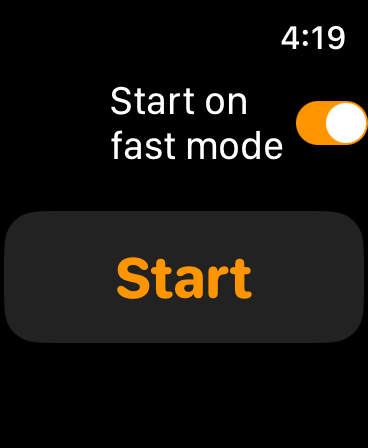
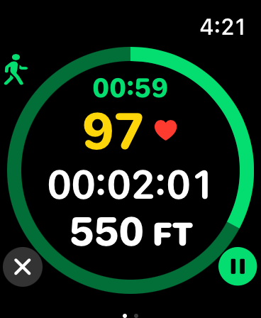
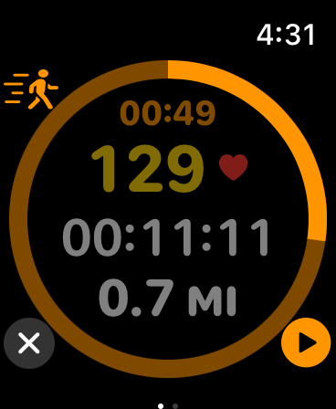

Simple timer for interval fast walking. It switches between slow walking mode and fast walking mode every 3 minutes. The Apple Watch vibrates to notify you when it is time to switch modes. Heart rate, total time, and total distance are displayed in real time, so you can monitor your current heart rate and adjust your walking speed to meet your target heart rate.
Select whether to start in slow walking mode or fast walking mode with the “Start on fast mode” toggle button on the start screen, and press the start button.
By default, the “Start on fast mode” toggle button is off.
Tap the Start button, and the mode screen will be displayed for 3 seconds.
At this time, there is a vibration to indicate the mode.
In slow walking mode, there are two quick vibrations every second, and in fast walking mode, there are three quick vibrations every second.
Then the 3-minute countdown timer screen in that mode is displayed.
Within the countdown timer ring, the remaining time in this mode, heart rate, total time, and total distance are displayed in real time.
You can adjust your walking speed to achieve your target heart rate.
When the remaining time in the mode reaches 3 seconds, it vibrates once per second to let you know that the mode will be switched soon.
When the mode switches, the mode screen at that time is displayed for 3 seconds, and there is a vibration according to the mode.
The countdown timer in the switched mode is then displayed.

You can pause the display by tapping the pause button in the lower right corner of the screen.
At this time, the display inside the ring becomes translucent and the pause button changes to the play button.
Tap the play button to resume.
Slide the screen to the right to control music and podcasts.

To finish, tap the finish button “X” in the lower left corner of the screen.
When finished, a summary screen is displayed.
Total time, total distance, total energy, average heart rate, and maximum heart rate are displayed.
Tap the Done button or the X button to return to the start screen.
If you have any questions, please contact me.
nakagawasoftware@gmail.com